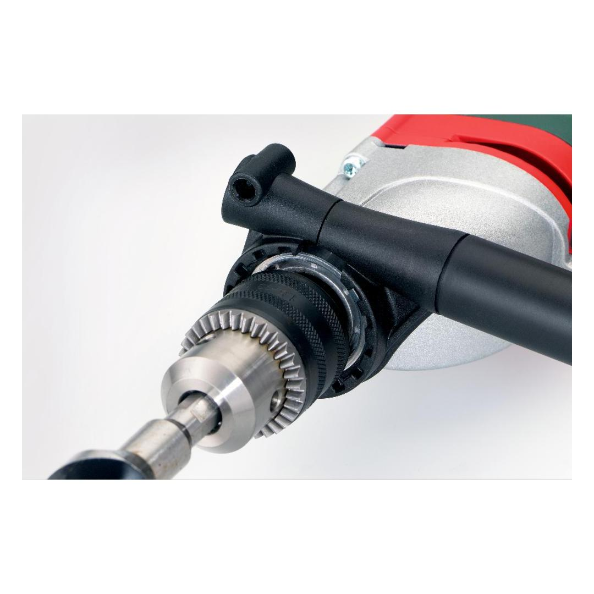
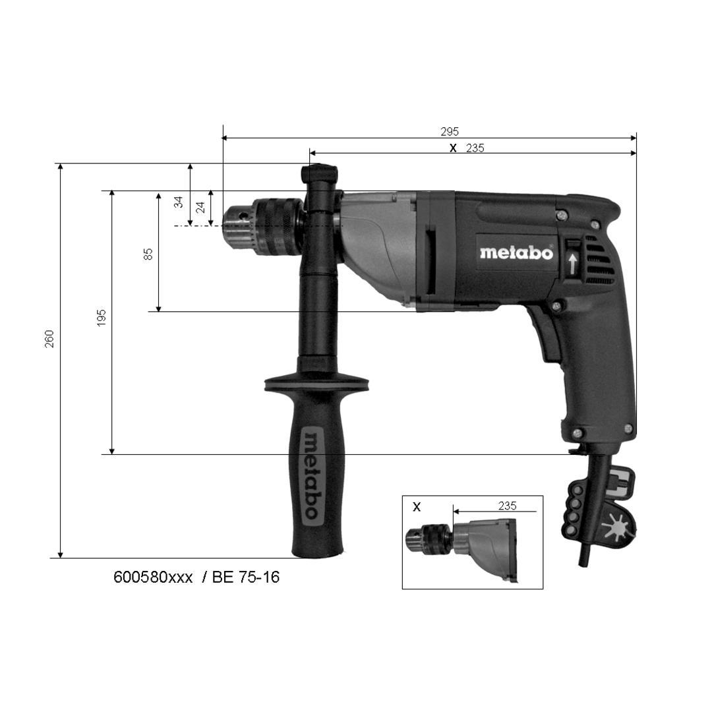
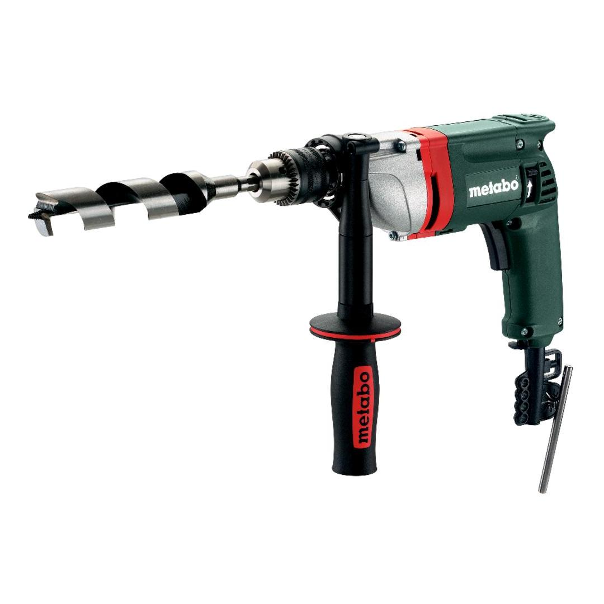

600580000




| Rated input power | 750 W |
| Drill Ø steel | 16 mm // 5/8 " |
| Drill-Ø soft wood | 50 mm // 2 " |
| No-load speed | 0 - 660 rpm |
| Maximum torque | 75 Nm // 664 in-lbs |
mechanical decoupling of the drive for safe working should the tool stop unexpectedly
play video| Rated input power | 750 W |
| Output power | 470 W |
| Drill Ø steel | 16 mm // 5/8 " |
| Drill-Ø soft wood | 50 mm // 2 " |
| No-load speed | 0 - 660 rpm |
| Speed at rated load | 350 rpm |
| Gears | 1 |
| Maximum torque | 75 Nm // 664 in-lbs |
| Collar diameter | 43 mm / 1 11/16 " |
| Chuck capacity | 1.5 - 13 mm // 1/16 - 1/2 " |
| Drill spindle with hexagonal recess | 6.35 mm / 1/4 " |
| Drill spindle thread | 1/2 " - 20 UNF |
| Weight (without power cable) | 2.6 kg / 5.7 lbs |
| Cable length | 4 m / 13 ft |
| Drilling in metal | 2.5 m/s² |
| Uncertainty of measurement K | 1.5 m/s² |
| Sound pressure level | 84 dB(A) |
| Sound power level (LwA) | 92 dB(A) |
| Uncertainty of measurement K | 5 dB(A) |
| Geared chuck |
| Chuck key |
| long side handle |